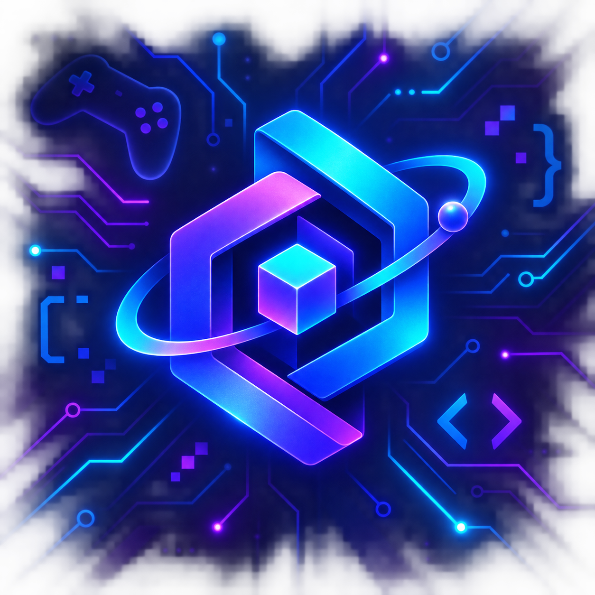

Como nasceu a ideia de Hades?
Por: Murillo Araujo Silva
A Supergiant Games começou a desenvolver Hades pouco depois do lançamento de Pyre, em 2017. O estúdio queria criar algo que reunisse as melhores características de seus projetos anteriores: a ação rápida de Bastion, a atmosfera marcante de Transistor e a narrativa focada nos personagens de Pyre. Antes mesmo de escolher a mitologia grega como cenário, a equipe já havia decidido que o novo jogo seria lançado em acesso antecipado. Assim, os jogadores poderiam experimentar versões ainda em desenvolvimento e ajudar o estúdio com opiniões e sugestões. Hades levou pouco mais de três anos para chegar à versão completa.
Fonte: FAQ oficial de Hades ↗